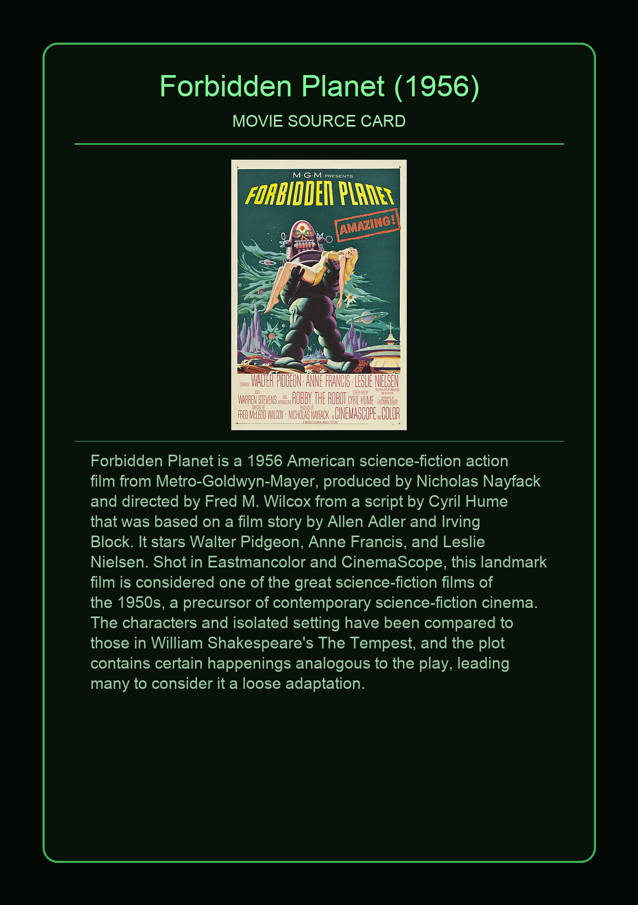
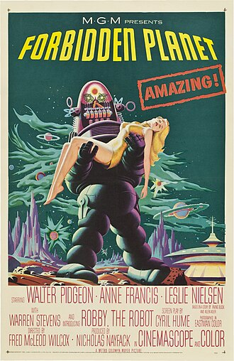

Forbidden Planet is a 1956 American science-fiction action film from Metro-Goldwyn-Mayer, produced by Nicholas Nayfack and directed by Fred M. Wilcox from a script by Cyril Hume that was based on a film story by Allen Adler and Irving Block. It stars Walter Pidgeon, Anne Francis, and Leslie Nielsen. Shot in Eastmancolor and CinemaScope, this landmark film is considered one of the great science-fiction films of the 1950s, a precursor of contemporary science-fiction cinema. The characters and isolated setting have been compared to those in William Shakespeare's The Tempest, and the plot contains certain happenings analogous to the play, leading many to consider it a loose adaptation.
This page aggregates references to the source material behind Name Lore entries.